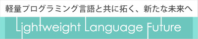

Lightweight Language Future 開催のお知らせ
Lightweight Language Future 開催のお知らせ
2003年はLL Saturday、2004年はLL Weekend、2005年はLLDN、2006年はLL Ring、2007年はLL魂としてLLファンの期待に応えてきたLightweight Language カンファレンスが、今年もやってきます。
今年のタイトルは、Lightweight Language Future(通称：LL Future)です。 未来への期待感をテーマとし、創造的挑発によって未来の1ページを切り開きます。LLにかけるプログラマ達の想い、夢、野望を丸1日ご堪能ください。

昨年までと同様、今年も各プログラミング言語コミュニティの協力を得て、それぞれの言語の特徴などを比較しながら理解できるセッションを多数用意する予定です。

ここ数年、日本では Lightweight Language という言葉がすっかり市民権を得ました。仕事で LL、趣味で LL、とにかく LL と、様々な用途で応変され使用されています。LL Future は、正に今、成長途上にある Lightweight Language が主張するイノベーティブな未来、経験を積み成熟した言語が語る現実の世界と未来への希望、これら新旧の言語の主張が会する珍しいイベントです。
8月30日（土）、なかのZERO大ホールにて１日中開催予定！
熱い熱い想いを持った皆さんの参戦をお待ちしております！！
※ 開催概要はこちら

ブックマーク
- 公式タグ：llfuture
-


-